Set up your community
After creating your community, configure it from the Settings page. Add branding, write an About page, set membership rules, manage channels, customize navigation, and enable paid membership.
Open your community settings
- Open your community.
- Click Settings in the left sidebar.
The Settings page has six tabs: General, About, Membership, Channels, Navigation, and Danger.
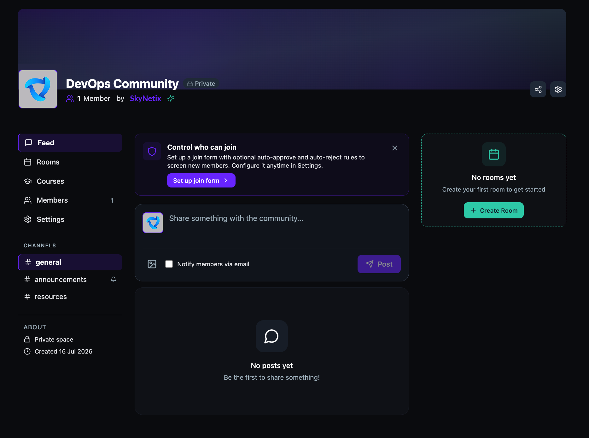
Create a room
- On your community homepage, click + Create Room in the top-right panel.
- Under Choose Event Type, select one:
- Mingling Room — a structured event with lobby, matching algorithm, and 1:1 meeting rooms.
- Video Call — a direct call without matching or lobby, just a simple group video meeting.
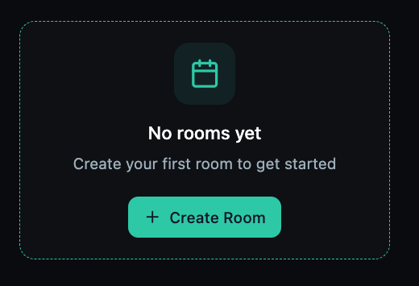

Update branding and general settings
- Click the General tab.
- Under Space Branding, click Add Icon to upload a square icon (max 2 MB). Click Add Cover Image to upload a cover image (recommended 1200×400, max 5 MB).
- Edit the Space Name and Description as needed.
- Under Visibility, select one:
- Private — invite only.
- Discoverable — anyone can find your community.
- Click Save Changes.
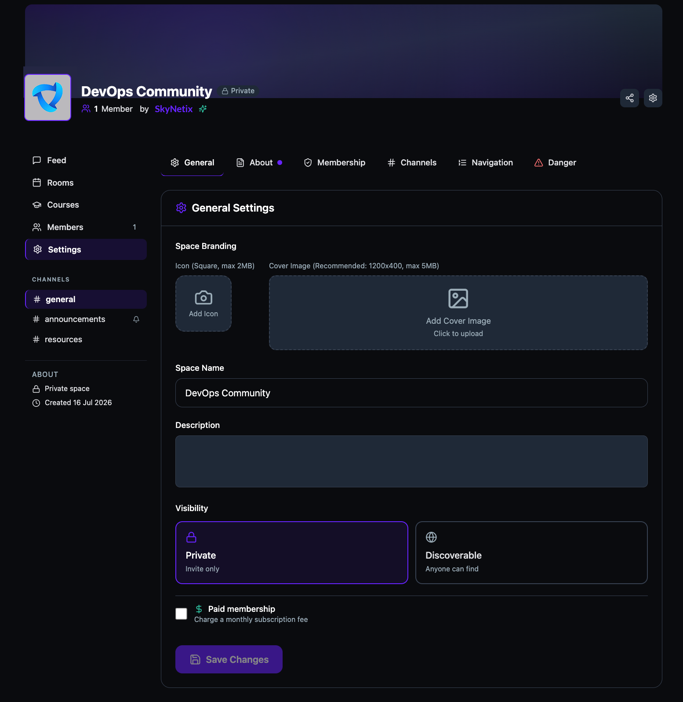
Enable paid membership
- On the General tab, check the Paid membership checkbox.
- Enter the Monthly Price (USD).
- Optionally check Offer yearly billing and enter the yearly price. The platform automatically calculates and displays the savings percentage compared to paying monthly.
- Click Save Changes.
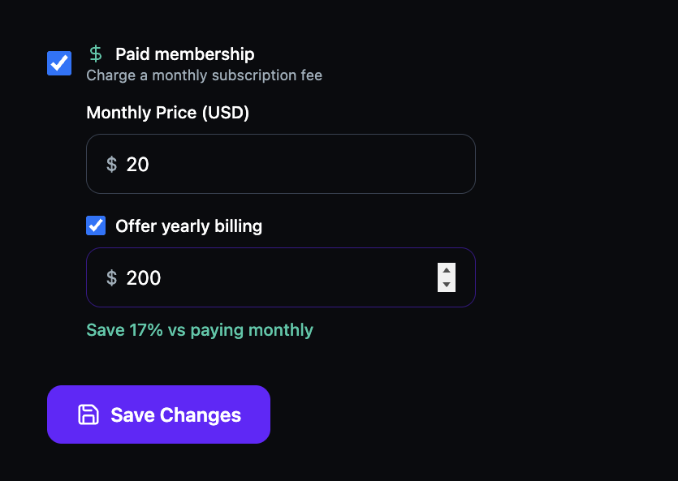
Write your About page
- Click the About tab.
- Edit the starter template using the rich text editor. You can format text with bold, italic, and headings, and add links, images, and videos.
- Click Save Changes to publish your About page.
Tip: Non-members see the About page first when they visit your community. Use it to explain your mission, who the community is for, and what members get.
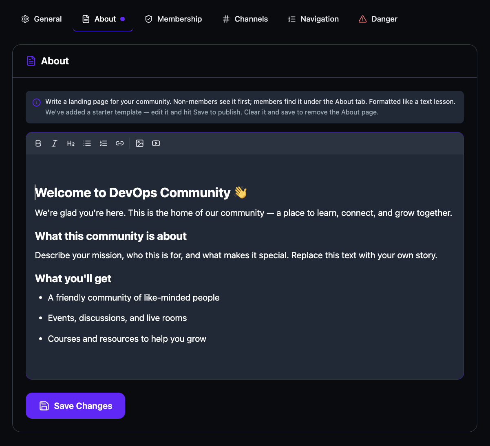
Configure membership rules
- Click the Membership tab.
- Under How should new members join?, select one:
- Auto-approve — anyone can join instantly.
- Criteria-based — auto-approve applicants whose answers meet defined rules and auto-reject others.
- Require approval — you review each request manually.
- Click Save Changes.
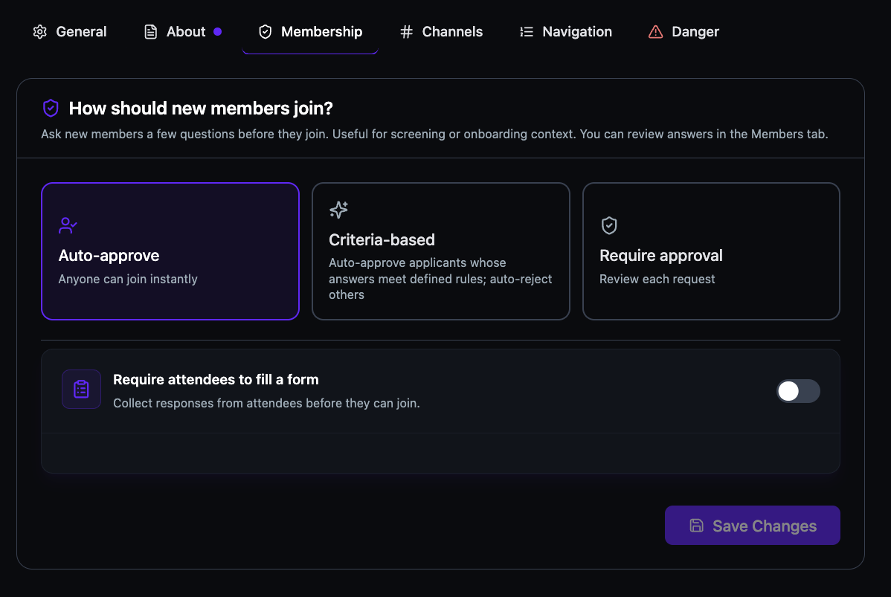
Set up a join form
- On the Membership tab, toggle Require attendees to fill a form on.
- Enter a Form title.
- Under Quick Add From Suggestions, click + next to any suggested field to add it as a question. Available suggestions include Full Name, Email Address, Phone Number, Company / Organization, Job Title, LinkedIn Profile URL, What brings you here?, and How did you hear about us?
- To add a custom question, click + Add question at the bottom.
- For each question, select the answer type (Short answer, etc.) and check Required if the field is mandatory.
- Click Save Changes.
Tip: You can review member responses in the Members tab.
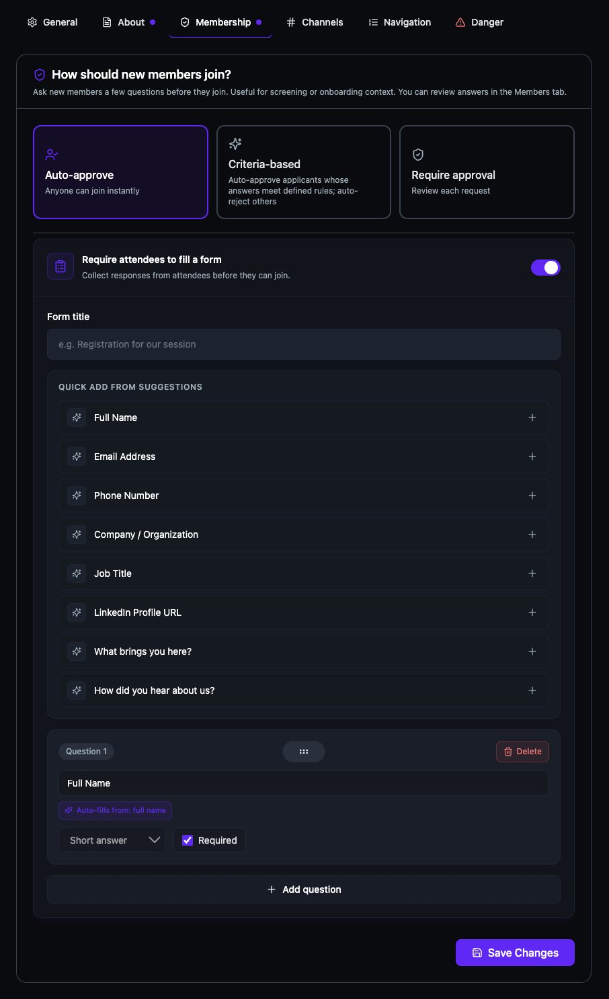
Manage channels
Every community starts with three default channels: # general, # announcements, and # resources.
- Click the Channels tab.
- To add a channel, click + Add.
- Enter a Channel name and an optional Description.
- Check Announcement only (only admins can post) if you want to restrict posting to admins.
- Click + Create.

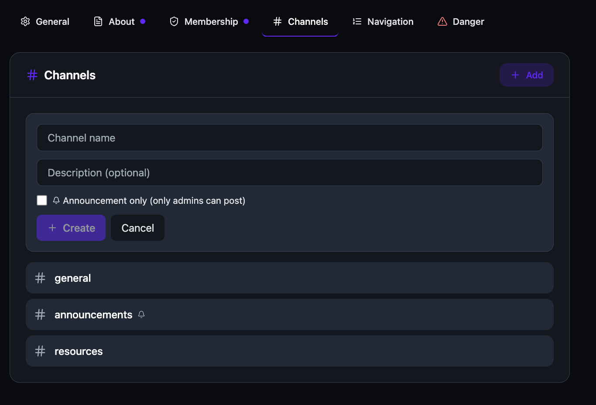
Customize navigation
- Click the Navigation tab.
- Under Tab order & visibility, drag tabs to reorder them. The first visible tab becomes the default landing page.
- Click the eye icon on any tab to hide it. Hidden tabs are removed from the member sidebar.
- Click Save Changes.
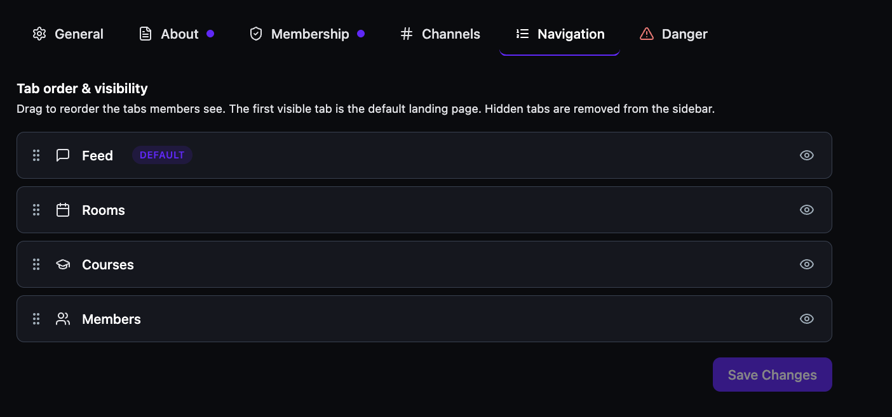
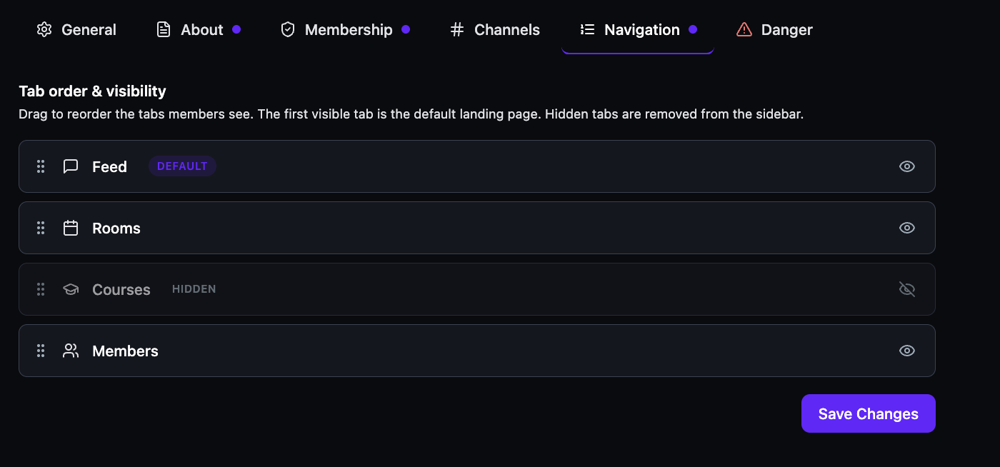
Delete your community
- Click the Danger tab.
- Under Danger Zone, click Delete Space.
Please note: Once you delete a community, there is no going back. All posts, members, and data are permanently deleted.
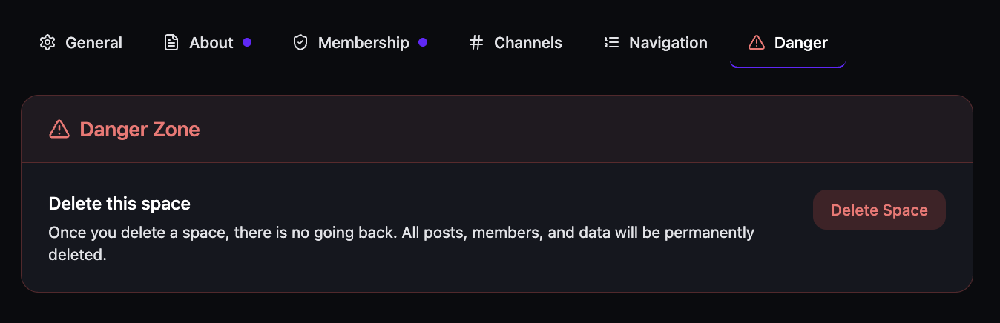